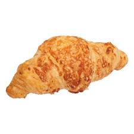
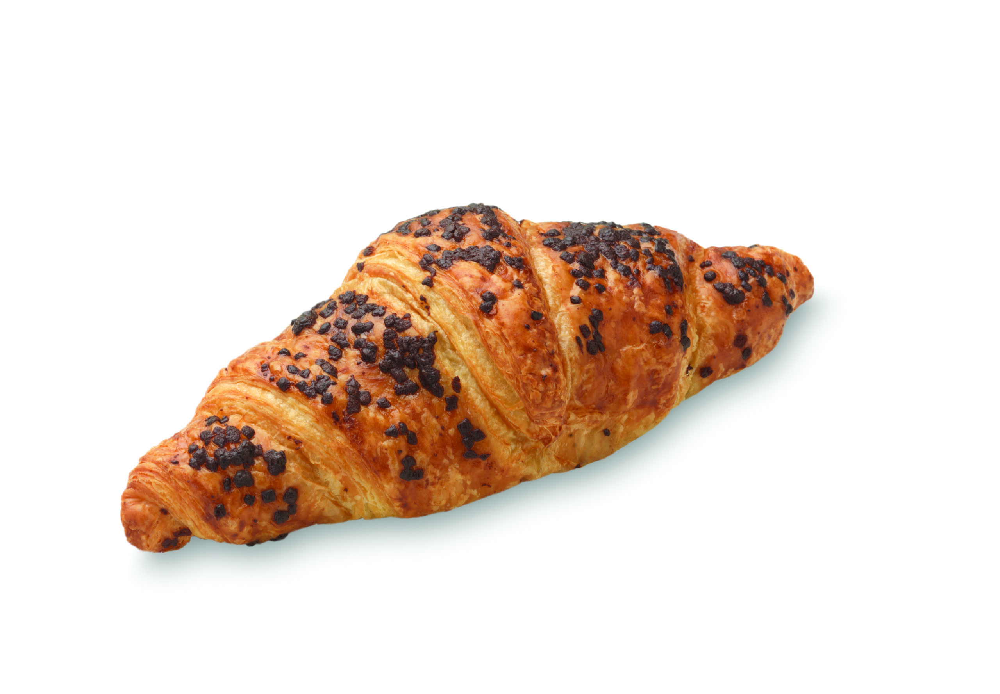

Croissant

€0,99
Deze heerlijke, luchtige en knapperige croissant voor maar €0,99! wie wil zo'n heerlijke delicatesse nou niet?
Plus- en minpunten
✔ Vol van smaak.
✖ Kruimelig, niet om in de auto te eten.
Ingrediënten:
Tarwebloem, roomboter, gist, suiker, water, scharrelei, gejodeerd zout, tarwegluten, antioxidant (ascorbinezuur [E300]). Waarvan toegevoegde suikers 2.4g per 100 gram en waarvan toegevoegd zout 0.90g per 100 gram.
Gerelateerde producten

Kaascroissant
Een croissant met een laagje van krokante kaas aan de buitenkant en gevuld met zachte kaas aan de binnenkant, wie wilt zo'n delicatesse nou niet?

Frikandelbroodje
Een krokant frikandelbroodje gevuld met een zachte frikandel, natuurlijk ook gevuld met een heerlijke rode suas.

Chocoladecroissant
Chocolade en croissant, een combinatie om van te smullen. Met een laagje van chocolade aan de buitenkant en een vulling van chocola aan de binnenkant, is dit de lekkerste delicatesse.